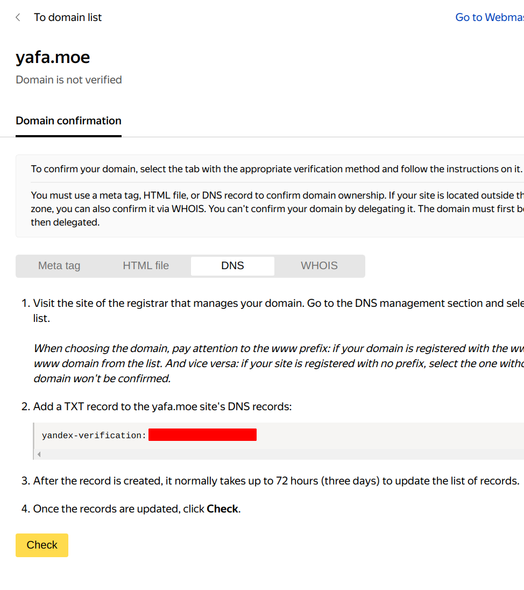

Yandex Email
Contents
前言
前几天买了一个域名就是现在的yafa.moe，看着自己丑啦吧唧的邮箱地址，想到可以自己折腾一个邮箱来着。建立域名邮箱有很多种方法，可以选择自建或者是选择一些免费的邮箱，为了功能和防垃圾邮件也可以选择付费的一些邮箱。毕竟我穷，最后在Zoho和Yandex中选择了Yandex。
准备
- 域名 （yafa.moe）
- 当前可用的邮箱 （用于注册yandex账号）
- 邮箱客户端 （thunderbird邮件客户端作为日常的使用）
注册Yandex
首先到Yandex Email的官网注册一个帐号。
这里可以选择用手机注册，也可以选择用安全问题注册。
注册成功之后就可以开始注册域名邮箱了。
注册域名邮箱
首先打开域名邮箱注册地址
输入你的域名地址之后，按Sign up free 就来到了webmaster的页面，接下来我们要验证域名和设置解析了。
验证域名和设置解析
首先来到的是webmaster的页面
这里我们需要证明一下这个域名是自己的。这里的验证方式有以下几种：
- html 文件验证 （我当前的博客是放在github page上的，但是你可能也注意到了是
www.yafa.moe是这个域名带有www的，放在github page上是没办法正常验证的，我也不想换成没有www的。 - meta tag 这个需要在网站加入特定的meta头，这个我托管在github page同样的原因这个不能搞。
- whois： 这个也不推荐搞有点不安全。
- DNS 记录，这次打算用的方式就是添加DNS记录，在域名管理的DNS记录中添加一条新的TXT记录。
复制这个TXT记录的内容： 
登录到你的域名注册账户，然后选择域名的DNS记录管理，添加对应的记录：
可以在本地验证一下你添加的DNS记录是否生效，DNS是有刷新周期的，刚开始查询不到或者是验证不通过也是正常的。
在本地可以用dig工具来查询TXT记录
|
|
验证通过之后会让你再添加几条记录给你的域名，按照对应的提示添加你的记录：
添加完成之后我们就可以开始下一步也就是创建自己的邮箱了。
创建账号
首先登录到Все сотрудники
选择下方的添加按钮:
接下来会弹出一个很小的菜单我们选择Add a person
这时候会弹出一个很详细的New employee的菜单，这里面标注*的就是必须要填写的部分：
填写完成之后我们还需要登录Email Yandex官网，输入刚刚创建的用户名和密码。这里必须要登录一下官网，因为有一个协议是必须要接受之后才可以使用。
现在就可以正常使用了，如果你想要使用其他的客户端之类的可以参考下面的这个章节。
邮件客户端使用
这里我以Thunderbird雷鸟邮件客户端为例子进行设置。
输入帐号和密码之后选择手动配置Configure manually
这里提示输入IMAP服务器和SMTP服务器，和SMTP服务器（IMAP服务器负责下载邮件本地操作也会同步到远端，SMTP服务器负责发送邮件）：
Yandex的服务器分别是：
- POP3：
pop.yandex.comSSL 端口：995 - SMTP：
smtp.yandex.comSSL 端口：465 - IMAP：
imap.yandex.comSSL 端口：993
输入完成之后选择高级设置，给邮件来一个验证签名吧！

要注意的是，现在发邮件还是要再去允许一下雷鸟邮件客户端使用的！
之后就可以正常使用啦~
参考文档
Author Yafa Xena
LastMod 2021-02-14